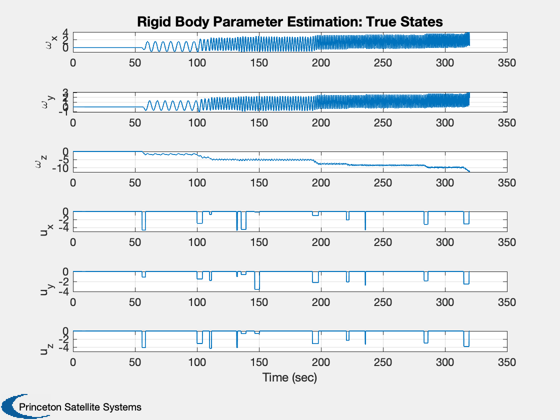
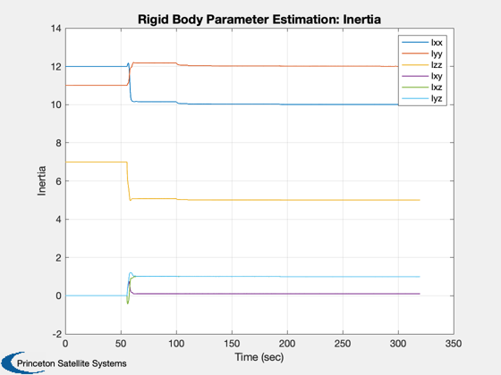
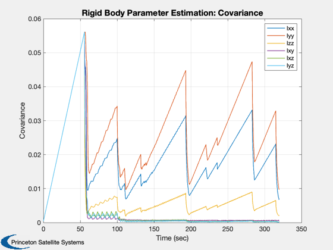

Demonstrate UKF parameter estimation with a rigid body.
This estimates only inertia. The parameter estimator does not estimate the body state. ------------------------------------------------------------------------- See also Plot2D, RK4, UKFP -------------------------------------------------------------------------
Contents
%-------------------------------------------------------------------------- % Copyright 2006 Princeton Satellite Systems, Inc. % All rights reserved. %-------------------------------------------------------------------------- nSim = 3200; dRHS = struct; dRHS.w = [10 12 5 0.1 1 1]; sigY = 0.0001;%0.05; xP = zeros(18,nSim); x = [0;0;0]; dT = 0.1; uType = 'sine';
Estimation parameters
%---------------------- d.x = x; d.int = 'RK4'; d.rHSFun = 'RHSRBUKF'; d.measFun = 'GXUKF'; d.measFunData = []; d.alpha = 1e-3; d.kappa = 0; d.beta = 2; d.dT = dT; d.rHSFunData = dRHS; d.rY = 0.00001*eye(3); d.rP = 0.0001*eye(6); d.p = 4*d.rP; t = 0; y = 0; d.w = [12 11 7 0 0 0]'; d = UKFP('initialize', d ); tPulseStop = 10; dRHS.u = [0;0;0]; uNext = 0.1*(0.5*rand(3,1) - 0.5); tNext = t + 20*rand;
Run the simulation
%------------------- for k = 1:nSim % Plotting %--------- d.x = x; % This must be before the propagation xP(:,k) = [x; d.w; diag(d.p);dRHS.u]; if( strcmp(uType,'Sine') ) dRHS.u = 0.1*[sin(0.03*t);cos(0.02*t);sin(0.01*t)]; else if( t >= tPulseStop ) dRHS.u = [0;0;0]; uNext = 10*(0.5*rand(3,1) - 0.5); tNext = t + 50*rand; tPulseStop = 5*rand + tNext; elseif( t >= tNext ) dRHS.u = uNext; end end d.rHSFunData.u = dRHS.u; % Update the RHS %--------------- x = RK4( 'RHSRBUKF', x, dT, 0, dRHS ); % Measurement %------------ y = x + sigY*randn(3,1); t = t + dT; % Kalman Filter. This must be after the propagation %-------------------------------------------------- d.t = t; d = UKFP( 'update', d, y ); end t = (0:(nSim-1))*dT; yL = {'\omega_x' '\omega_y' '\omega_z' 'u_x' 'u_y' 'u_z'}; leg = {'Ixx' 'Iyy' 'Izz' 'Ixy' 'Ixz' 'Iyz'}; Plot2D( t, xP( [1:3 16:18],:), 'Time (sec)', yL, 'Rigid Body Parameter Estimation: True States' ); Plot2D( t, xP( 4: 9,:), 'Time (sec)', 'Inertia', 'Rigid Body Parameter Estimation: Inertia' ); legend(leg{:}) Plot2D( t, xP(10:15,:), 'Time (sec)', 'Covariance', 'Rigid Body Parameter Estimation: Covariance' ); legend(leg{:}) %-------------------------------------- % $Date$ % $Id: b1f694c985bcd005f46ca3f1587307098b2fb32c $  